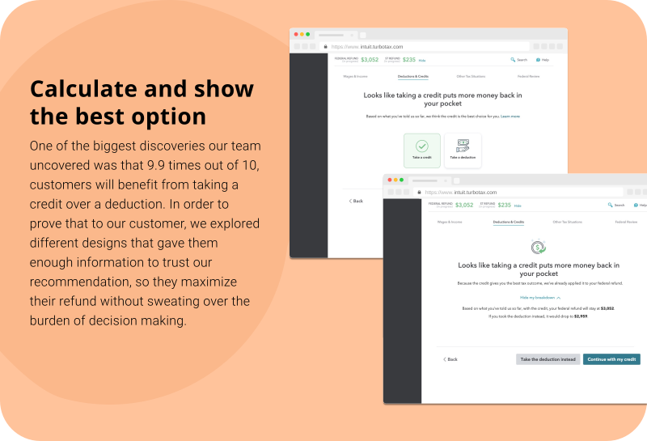
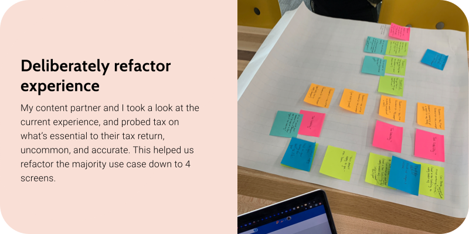
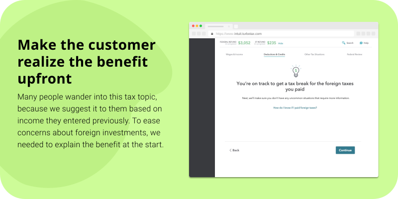
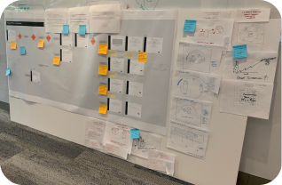
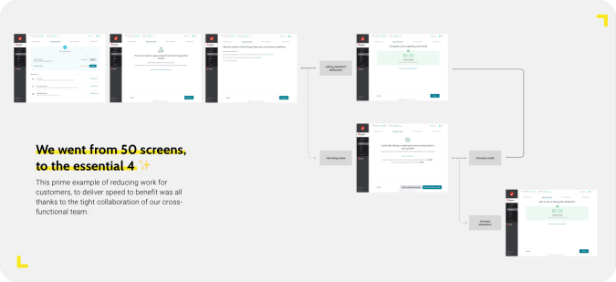
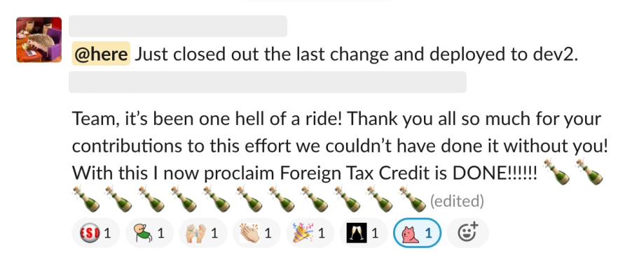

All of our customers prioritize maximizing their refund. Unfortunately, for many investors, TurboTax doesn’t always make that simple and straightforward. Many investor-centric sections of the tax filing process have not been enhanced in over a decade. This workflow which allows customers to claim the foreign tax credit, is past due for a redesign and affects investors in all of our products.
My role for this project as the lead product designer, was to deliver simplified flows for our investors to make them feel like taxes are effortless in 2 months. The 2 projects I led were responsible for reducing contacts, breaking down complex tax logic, and decreasing time spent on this burdensome flow.
Our team got our hands dirty and dove straight in analyzing the entire experience, by reviewing analytics for each button clicked in the existing experience. At the same time, we dove into looking at the actual reasons why people contacted help. Through all this analysis, we boiled down the issues to these key problems:
After synthesizing our newfound understanding about these customers, I identified a list of design requirements to help address the problems:
I did design explorations through paper sketches, sticky notes, as well as through Sketch. Here are the key areas I explored:
Area 1: How might we take the burden of choosing between a deduction or credit, off the customer's shoulders?

Area 2: How might we balance the customer's desire to finish taxes as soon as possible against answering their top of mind questions and concerns? How might we streamline the experience to help customers receive their tax break as fast as possible?



My content partner and I made several iterations over the month. The key to maintaining momentum through a design timeline, is on-going collaboration with other partners. I regularly held team syncs, to share the design process, get feedback, and gain more expertise about the tax logic. With time, we presented designs and received feedback from cross-functional directors in TurboTax (Product Management, Tax, Design, Development) and the senior leadership team, including the GM of Consumer Group.
Our scrum team didn’t have a regular researcher, so my content partner and I attended office hours—a place for one off expertise from a researcher. We had him perform a cognitive walkthrough, which involved going through our paper prototype (printed out sheets of paper), in order to provide feedback on on the final design solution.
We used this session as a gut check, to determine whether more usability testing was required. In the end, we all agreed that no more usability testing was needed, because the reductive work we put into the design resulted in a clearer and simple path.
At our final hand-off the team had acquired new engineers who had not been brought along the design journey. I held a team sync to present the design, answer any questions, and listen to the feedback from developers. From this project, I learned it’s important to empathize with the needs and concerns of your development team, to ensure that the design gets implemented as intended and can be developed feasibly.

The team's preservation of tax accuracy throughout the flow, managed to remove much of the headache caused by dense and confusing interactions and content. For the 95+% of users who will be claiming foreign tax credit this tax season, they’ll be able to save time, and quickly move forward in their tax prep process.
The redesign resulted in less contacts and less time spent in this workflow.
One of the tradeoffs I had to make was not being able to redesign the entire workflow. Our dev team didn’t have enough time, or manpower to implement an entire redesign of this workflow (work requires moving calcs, UI, etc. over to a new technology stack), in the given timeframe. With that in mind, I first needed to understand what the majority use case was, and how large of an audience falls under that use case. Even though I faced this constraint, I was still able to identify and solve for more than 95% of the traffic visiting this area of the product.

In retrospect, this project taught me how to become a leader and unite cross-functional partners around a single goal. I was responsible for defining the design timeline, scope, requirements, and the execution. Here are my biggest takeaways: